Web Protocols
HTTP and HTTPS
Randy J. Fortier
randy.fortier@uoit.ca
@randy_fortier
Outline
- What is version control?
- Centralized
- Decentralized
- How do we use version control?
- Basic Operation of Git
Why Version Control?
Motivation
What is Version Control?
- Software that records changes to files
- Version control lets you:
- Revert to previous versions
- See the changes log
- Along with messages, who submitted, etc.
- Share your code with the rest of your team
- Including merging your work
- Backup/publish your work to a public repository
- e.g. GitHub, BitBucket
Centralized Version Control

Centralized Version Control
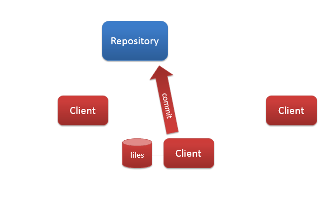Centralized Version Control
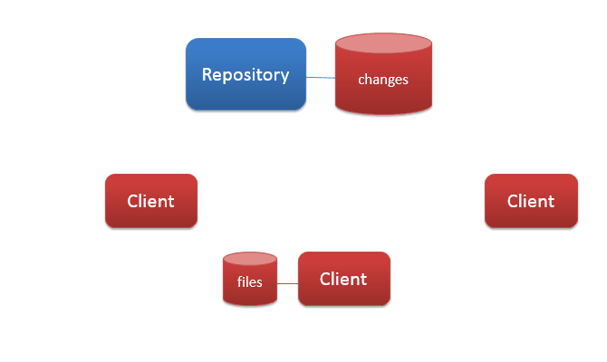Centralized Version Control
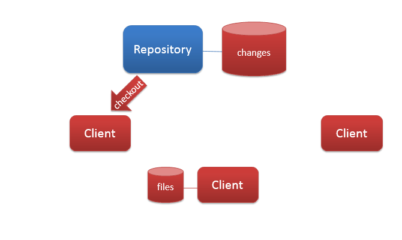Centralized Version Control
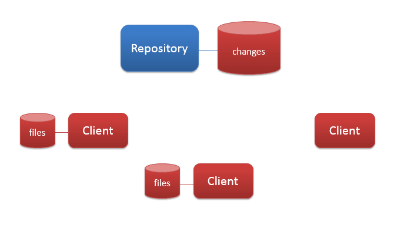Centralized Version Control

Centralized Version Control

Centralized Version Control
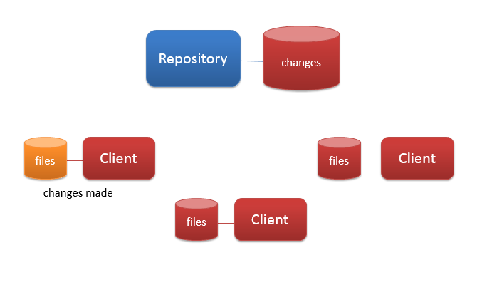Centralized Version Control
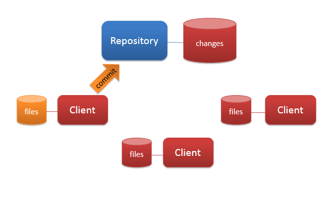Centralized Version Control
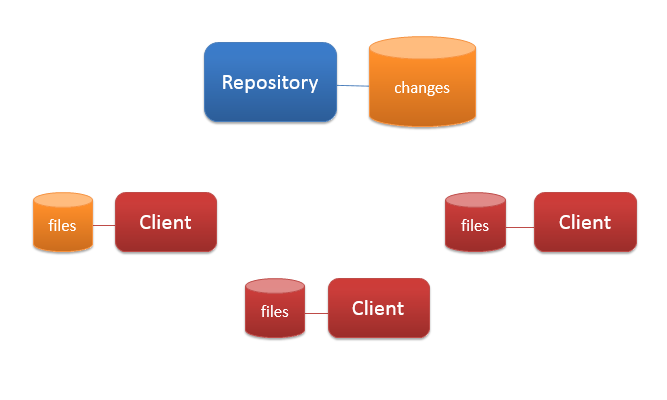Centralized Version Control
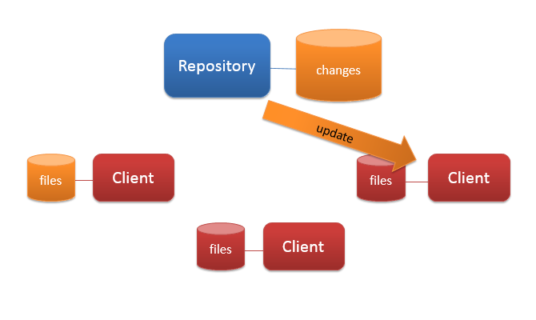Centralized Version Control
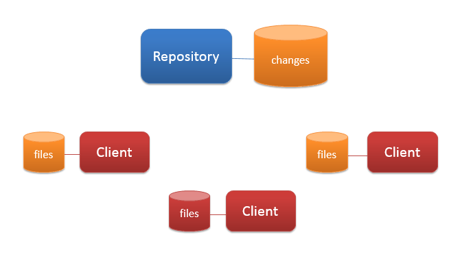Centralized Version Control
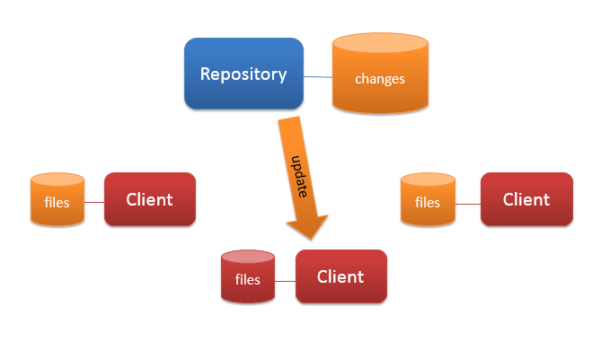Centralized Version Control
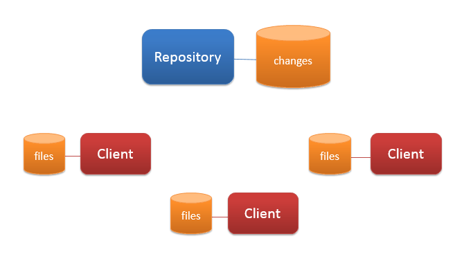Decentralized Version Control
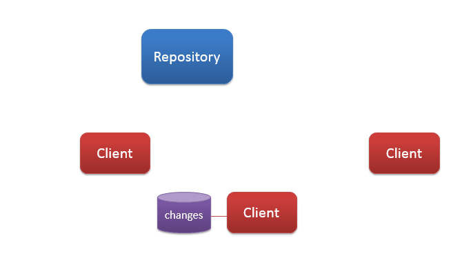Decentralized Version Control
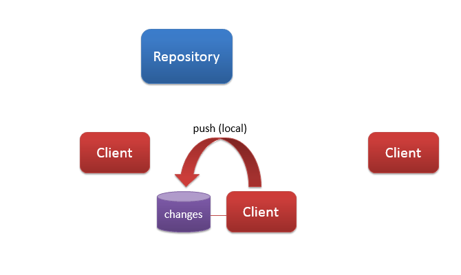Decentralized Version Control
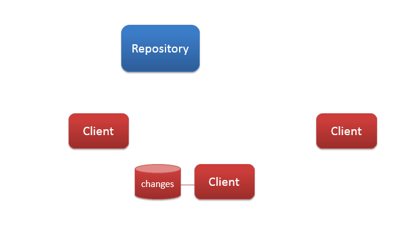Decentralized Version Control
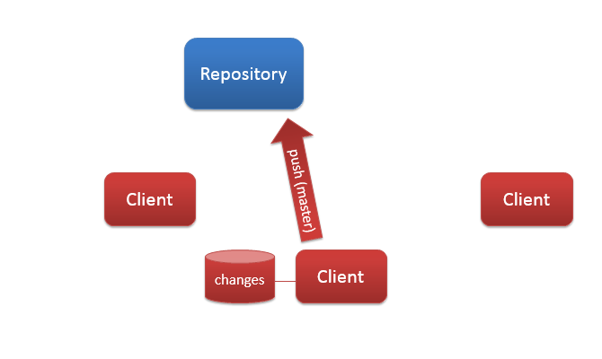Decentralized Version Control
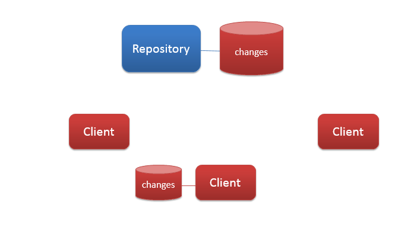Decentralized Version Control
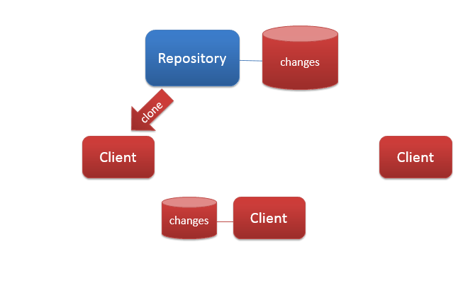Decentralized Version Control
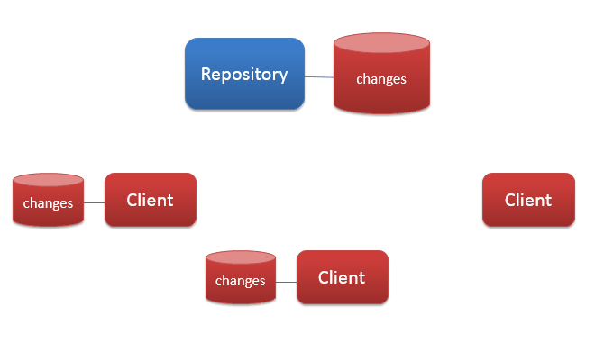Decentralized Version Control
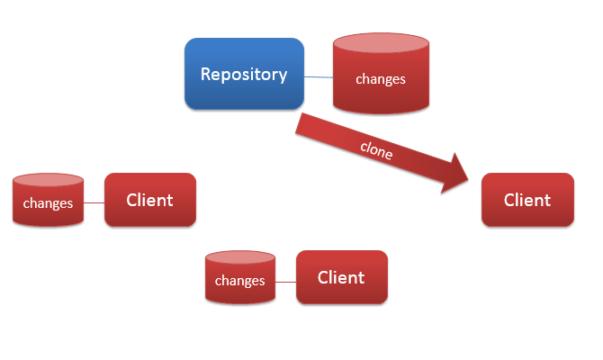Decentralized Version Control
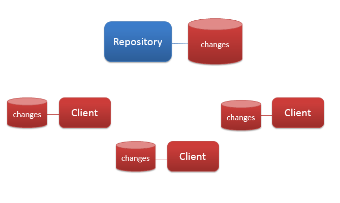Decentralized Version Control
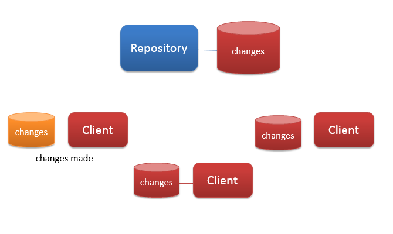Decentralized Version Control
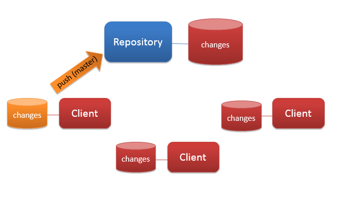Decentralized Version Control
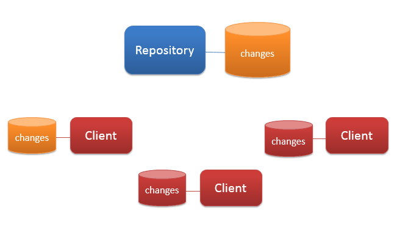Decentralized Version Control
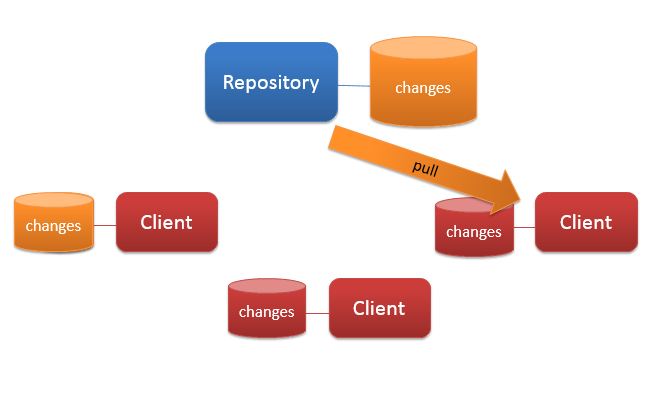Decentralized Version Control
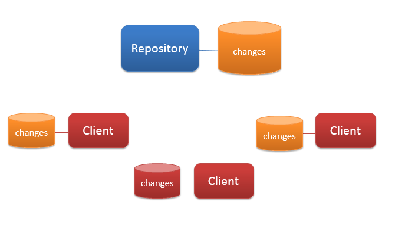Decentralized Version Control
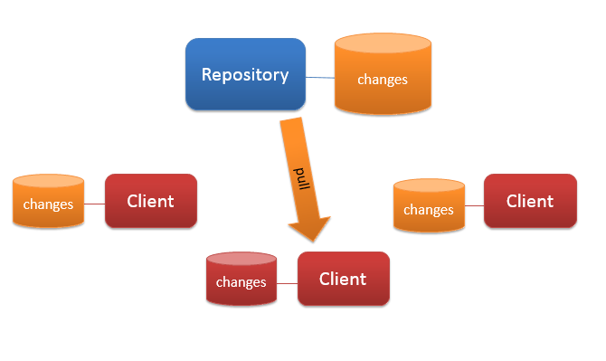Decentralized Version Control
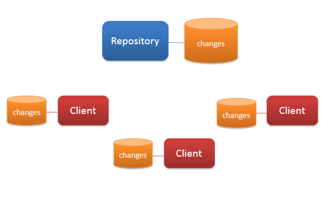Using Git
Version Control Practicum
Getting Ready
- Create your work in a folder
$ cd /home/bsmith
$ mkdir myproj1
$ cd myproj1
…
Creating a Local Repository
- Tell git to manage the folder
$ git init
$ git add .
$ git commit –m "Initial commit"
Make Changes
- Add additional files:
$ git add myfile1.cpp
$ git add myfile2.cpp myfile3.cpp
$ git commit -m "Adding authorization"
Observing Changes
- Before commit, view pending changes (summary):
$ git status
On branch master
Changes to be committed:
(use "git reset HEAD <file>..." to unstage)
new file: library.cpp
Changes not staged for commit:
(use "git add <file>..." to update what will be committed)
(use "git checkout -- <file>..." to discard changes in working directory)
modified: sample.cpp
Observing Changes
- Before commit, view pending changes (detail):
$ git add library.cpp
$ git diff --cached
diff --git a/library.cpp b/library.cpp
new file mode 100644
index 0000000..55d5de0
--- /dev/null
+++ b/library.cpp
@@ -0,0 +1,3 @@
+void calculate(int a, int b) {
+ return a + b;
+}
Using a Remote Repository
- Create your repository on GitHub (or BitBucket)
- Tell git to clone the project
$ git clone https://github.com/user1/myproj2.git myproj2
Push to Remote Repository
- Push changes back to remote repository:
$ git commit -m "Added hashing"
$ git push -u origin master
Pushing Local to Remote
- Push changes back to remote repository:
$ git commit -m "Added hashing"
$ git remote add origin https://github.com/user1/myproj2.git
$ git push -u origin master
Downloading Changes
- If you are about to start work, it is best to update your code before you begin
- Download any changes in the remote repository:
$ git pull
Using Git
Advanced Practicum
Branches
- A branch is a separate changelog
- Any changes made to a branch do not affect other branches
- Useful for experimental features
- Sometimes branches are kept separate
- e.g. Mobile-optimized kernel
- Sometimes branches are merged
- e.g. When an experimental feature becomes stable
Create a Branch
- Create a new branch:
$ git branch mobileOptimized
$ git branch
* master
mobileOptimized
- Switch to our new branch:
$ git checkout mobileOptimized
Update Branch and Merge
- Make changes
- Switch to the master branch:
$ git checkout master
- Merge the branches:
$ git merge mobileOptimized
Handle Conflicts
- Find the conflicts (if any):
$ git diff
diff --cc mobile.cpp
index 366e2d1,26e7183..0000000
--- a/mobile.cpp
+++ b/mobile.cpp
@@@ -1,1 -1,3 +1,7 @@@
- /* nothing goes here for non-mobile systems */
++<<<<<<< HEAD
++/* nothing goes here for non-mobile systems */
++=======
+ void saveBattery() {
+ return;
-}
++}
++>>>>>>> mobileOptimized
View Logs
- View the commit history:
$ git log
View Logs - Graphical
- View the commit history in a graphical window:
$ gitk
Wrap-Up
- In this section, we learned about:
- Centralized vs. decentralized version control
- How to use git to manage your source code and other files